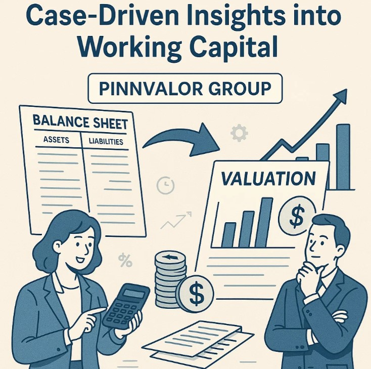

From Balance Sheet to Valuation: Case-Driven Insights into Working Capital
Working capital—the lifeblood of day-to-day business operations—is more than just a short-term liquidity metric. It plays a critical role in business valuation, especially in M&A transactions, performance assessments, and strategic decision-making. But how exactly does working capital influence valuation? The answer lies in both its quantitative impact and the nuances that only real-world scenarios can reveal.
In this blog, we explore the bridge between the balance sheet and business valuation through case-driven insights, demonstrating how shifts in working capital can influence value creation—or erosion.
How can subtle shifts in working capital transform your business valuation and deal outcomes?
Normalization of working capital levels separates noise from real value. Mastering this helps investors and founders negotiate confidently and drive sustainable growth.
📊 Understanding the Role of Working Capital in Valuation
At its core, working capital = current assets – current liabilities. It represents the short-term resources a company has to manage its operations. When assessing business value, especially in DCF (Discounted Cash Flow) or deal structuring, Net Working Capital (NWC) directly affects:
- Free Cash Flow (FCF) – Increases in NWC reduce FCF, decreasing valuation.
- Enterprise Value Negotiations – Buyers often adjust purchase price based on a normalized level of NWC.
- Risk Assessment – Volatile working capital can signal inefficiency or operational risk.
🧩 Case 1: The Overlooked Inventory Build-Up
Company: A mid-sized consumer electronics firm
Scenario: Inventory levels ballooned over the past 3 quarters.
Issue: Management cited expected demand surges, but actual sales stagnated. The excessive inventory tied up cash, increasing NWC and lowering free cash flow.
Valuation Impact:
- DCF valuation was reduced by ₹15 crores due to lower cash flows.
- PE investors negotiated a lower price, citing working capital inefficiency.
Insight: Excess inventory, though listed under current assets, can reflect poor forecasting and tie up valuable capital—depressing valuation.
💼 Case 2: Aggressive Receivables Strategy Backfires
Company: B2B SaaS firm
Scenario: To boost growth, the company extended credit periods from 30 to 90 days.
Outcome:
- Accounts receivable increased significantly.
- Collections slowed, straining liquidity.
Valuation Impact:
- Valuers applied a risk premium due to deteriorating cash conversion.
- The implied valuation was discounted by 8%.
Insight: While lenient credit terms may boost topline revenue, they can erode working capital efficiency, thus impacting valuation sustainability.
💡 Case 3: Supplier Negotiations Lead to Working Capital Gains
Company: FMCG brand
Scenario: The procurement team renegotiated supplier terms, extending payment cycles by 30 days.
Outcome:
- Accounts payable increased.
- Lower NWC need led to higher free cash flow.
Valuation Impact:
- The business commanded a valuation premium in an acquisition deal.
- FCF modeling showed a ₹10 crore increase in intrinsic value.
Insight: Improving payable terms can free up cash—enhancing valuation without altering core operations.
📐 Key Lessons from the Case Studies
- Quality of Working Capital Matters: It’s not just about numbers; the composition—whether inventory, receivables, or payables—tells a story about business efficiency and risk.
- Normalization is Crucial in Valuation: Valuers often adjust working capital to a “normal” level. Temporary spikes or dips need contextual interpretation.
- Cash Flow Is King: Any movement in NWC directly affects free cash flow, which in turn drives most modern valuation models.
- Negotiation Leverage: Understanding your working capital profile helps in negotiation—whether you're raising capital or selling your business.
🧮 How Analysts and Investors Can Respond
- Perform Trend Analysis: Identify unusual spikes in inventory or receivables.
- Benchmark Industry Norms: Compare working capital cycles across peers.
- Stress-Test Valuations: Model best/worst-case working capital scenarios and their impact on DCF.
Conclusion
Working capital is more than a balance sheet line item—it's a dynamic indicator of operational efficiency and financial health. Through the lens of real-world cases, we see how even small changes can have outsized impacts on valuation. For founders, CFOs, and investors alike, mastering the nuances of working capital is essential to navigating the valuation landscape with confidence.